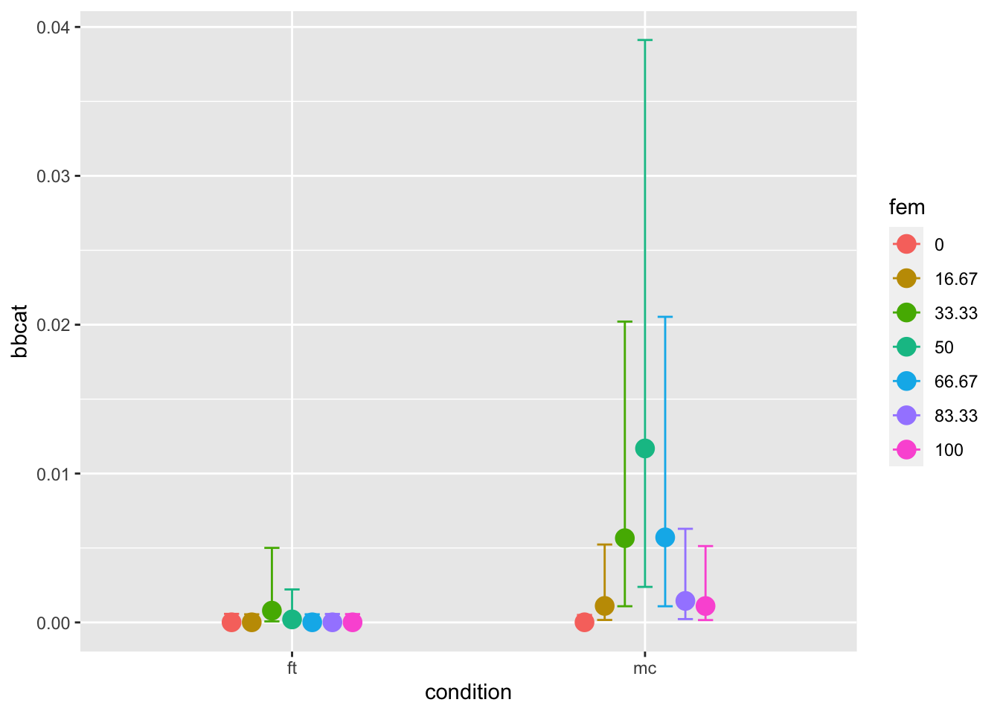
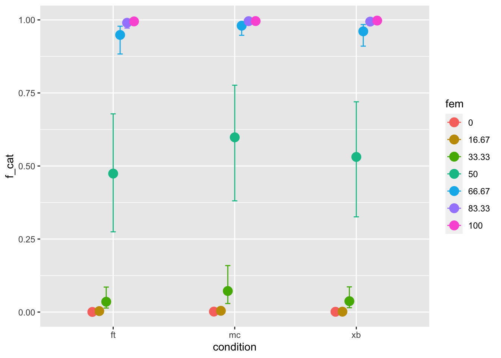
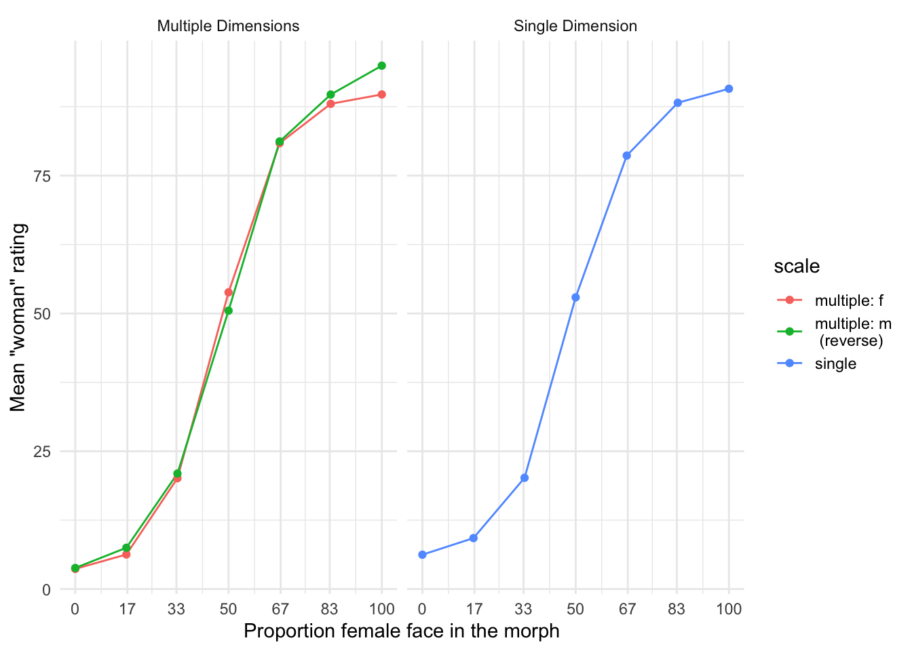
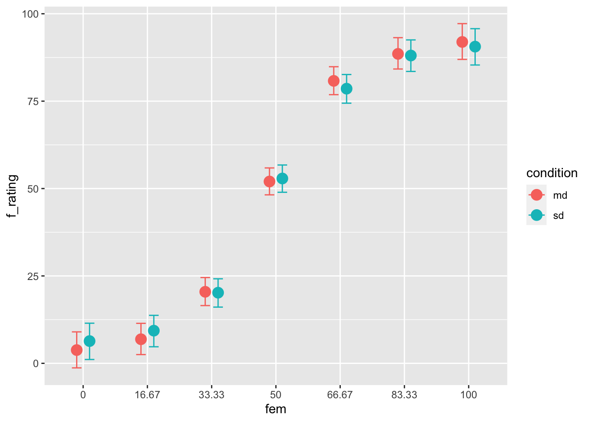

#Start by loading dependencies and the datalibrary(brms)library(tidyr)library(dplyr)library(bayesplot)library(tidybayes)library(ggplot2)source("src/functions.r")d <-read_and_clean("data/cat2stduy1_data.csv") %>%mutate(fem =100-masc)
Background
So, the background of this study is there’s a pretty big literature that looks at social categorization. This tends to assume that gender is binary and that asking people to categorize faces as “man” and “woman” is a consequence free action.
We thought that maybe it wasn’t, and we were interested in whether various response options that situated gender as more binary also shaped people’s perception of gender to be more binary.
So for the experiment, we produced morphed faces of different levels of femininity and masculinity. There were 18 continua, where gender varied in seven increments, for a total of 126 faces.
There were five response options conditions:
binary categories - man/woman
multiple categories - man/woman/other/don’t know
Freetext - a free text box
binary dimension - woman ——- man on a slider
multiple dimensions - woman / man on separate sliders.
I’ve divided this into two experiments: experiment 1 which compares the binary options, multiple categories and the freetext options. Experiment 2, which compare the binary dimensions and the multiple dimensions.
Maybe I’ve gone a little mad with putting things under tabs, or maybe it actually makes the page easier to navigate? Either way, here you can just switch back and forth between the descriptive statistics and the inferential statistics. Easy? Maybe!
So this figure just shows in total how many of each type of categorization the participants made.
Do people use the beyond-binary options?
The way I went about testing that is by comparing the amount of beyond-binary (i.e. “other” and “I don’t know” responses) across the free text and multiple categories conditions. Here’s snippet of the data for some context. As you can see, I’ve translated the variable “categorization” into one called bbcat based on whether or not the answer is “o” or not.
# A tibble: 6 × 4
categorization condition fem bbcat
<chr> <chr> <fct> <dbl>
1 m ft 0 0
2 m ft 16.67 0
3 o ft 33.33 1
4 f ft 50 0
5 f ft 66.67 0
6 f ft 83.33 0
So how do we actually test the question “do people use the non-binary option when they have them”? We can construct several models which gets increasingly more complicated and compare how well they predict the data. All models were based on multilevel models with random intercepts for participants and faces.
In short, the idea is simple. We make three models:
m0: a null model with no additional predictors.
m1: main effects model, with the predictors “morph level” and response option condition.
m2: interaction model, which is the the same as m1, with an additional interaction effect.
These models were tested using Leave One Out
So we start with a null model, m0, which just has an intercept, and includes neither morph level or condition. For reference, it looks like this, but feel free to let your eyes glaze over it. (but in case your curious, the model includes random effects for subjects and faces, but nothing else)
Then m1 adds fixed effect of condition and morph level. We can think about this as basically testing just the main effect of both condition (written out as \(\gamma_{cid}\)) and morph level (\(\beta_1Morph_{i}\)), but not the interaction (which we’ll get to later). \(cid\) is short for condition id, which means that this model calculates separate values for each condition, as opposed to a dummy variable, which would calculate the value (intercept) for one condition and then the difference of another condition. Here we just get values for each condition, and if we want to know the difference, we have to calculate it ourselves.
To add another level of complexity, we can make a second model m1 which includes the effects of both response option condition and morph level.
Lastly, m2 includes the full interaction effect. Note that all we’ve really done is changed \(\beta\) by also adding the \(cid\) subscript. What that means is that we’re calculating a unique effect of morph level for each condition. Again, the model doesn’t include an explicit interaction term (which, in standard notation, be the difference between the a reference condition and another condition), but we can calculate it later. And we will, don’t worry!
null <-brm(bbcat ~1+ (1|id) + (1|face:fem), family =bernoulli(link ='logit'), prior =c(prior(normal(-3,3), class ="Intercept"),#prior(normal(0,3), class ="b", coef= "conditionmc:fem"),#prior(normal(0,3), class = "b", coef = "conditionft")#prior(normal(0,3), class ="b", coef= "conditionft:fem")prior(cauchy(0,3), class ="sd") ),data = tmp,iter =6000, warmup =2000,chains =4,cores =4,sample_prior =TRUE,file ="models/m0" )main_effect <-brm(bbcat ~0+ condition + fem + (1|id) + (1|face:fem), family =bernoulli(link ='logit'), prior =c(prior(normal(0,3), class ="b", coef ="conditionmc"),#prior(normal(0,3), class ="b", coef= "conditionmc:fem"),prior(normal(0,3), class ="b", coef ="conditionft"),#prior(normal(0,3), class ="b", coef= "conditionft:fem")prior(cauchy(0,3), class ="sd") ),data = tmp,iter =4000, warmup =1000,chains =4,cores =4,sample_prior =TRUE,file ="models/fit_binary_stair_bb_fem" )interaction <-brm(f_cat ~0+ condition:fem + (1|id) + (1|face:fem), family =bernoulli(link ='logit'), prior =c(prior(normal(-7,5), class ="b"),prior(cauchy(0,3), class ="sd")),data = tmp,iter =6000, warmup =2000,chains =4,cores =4,sample_prior =TRUE,file ="models/fit_binary_stair_bb_fem_int_prior2" )
Results
Having fit all of these models I then compare them to see which best predicts the data. We do this using a method call leave-one-out cross validation. This tells us which of our five models best predict the data on “new” or out of sample data points? If I can get the machine to work, this should show up in table 1.
library(knitr)library(kableExtra)kable( loo_table[,1:4] %>%round(2),booktabs ="TRUE",#format = "latex",col.names =c("LOO difference", "St. Error diff", "LOO", "St. Error LOO"),#row.names = c("Free text", "Multiple categories", "Binary categories"),align =c("l", "c", "c", "c"),caption ="Relative predictive power of models describing the outcome on the categorization task" ) %>%kable_classic(full_width = F) %>%footnote(general_title ="Note.",general ="LOO diff refers to the difference in loo between the model and the most predictive model. The first row describes the most predictive model, which is why the difference is 0",threeparttable =TRUE,footnote_as_chunk =TRUE )
Relative predictive power of models describing the outcome on the categorization task
LOO difference
St. Error diff
LOO
St. Error LOO
interaction
0.00
0.00
-234.17
23.23
main_effect
-2.46
2.71
-236.63
23.07
null
-18.83
6.02
-253.00
24.51
Note. LOO diff refers to the difference in loo between the model and the most predictive model. The first row describes the most predictive model, which is why the difference is 0
The key pieces of information in this table are the LOO values and the LOO diffvalues. Lower LOO values indicate that the model makes better predictions. The LOO diff is simply stating the LOO score of each model subtracted from the low score of the most predictive model. The LOO diff of the best model, the interaction model is 0 because that score would be subtracted from itself.
How I interpret Table 1. is that the interaction models was the best at predicting data. In other words, this suggests that the interaction between condition and morph is an important determinant of the outcome. However, the standard errors of the difference are of a similar size to the actual difference. This suggests that the weight of the evidence in favor of the interaction model and the main effects model is about the same.
Pairwise comparisons
I’m going to forge ahead anyway, and do what we might think of as contrast analyses, focusing on the interaction only. Here we have several specific questions that we want answered. First, is it really the case that people generally make more beyond-binary categorizations in the mc condition? And secondly, is this effect concentrated at 50/50 morph level. First, let’s take a look at the data visualised.
Code
conditional_effects(interaction)

The y axis is a little unhelpfully labeled, bbcat stands for beyond-binary categorization. Basically, this figure illustrates how common beyond-binary categorizations are in the free text condition compared to the multiple categories condition. Which we already knew from figure 1. But it’s nice to get it confirmed. Now let’s do some statistical tests of these differences.
I ran three tests to test what you might call subhypotheses. These are all described below.
H1. Do particpants make beyond-binary categorizations in the multiple categories condition compared to the free text condition? It seems they do (Estimate = -4.11, CI =[-6.77], [-1.56], BF10= 60.99).
H2. If we focus on the 50/50 faces, do we still see an effect? It seems like we do (Estimate = -4.14, CI =[-7.43], [-1.4], BF10= 16.83).
H3. And if we focus on the faces at the end of the spectrum (i.e. 0 and 100 faces)? Here the evidence is only inconclusive (Estimate = -2.6, CI = [-7.96] - [2.49], BF10= 0.83). What does this mean? Well, there is an overall difference between the two conditions, and it is concentrated at the 50/50 faces
How does this effect the relative distribution of m/f scores
Great, let’s move on to the step 2 that we talked about. So having answered the questions of “do people actually use the extra response options” with a resounding “probably, but not so much”, I’m going to move on to the second question: is it the case that the answers shift the distribution of m/f scores? What I mean is, are people replacing their ratings of “man” with ratings of “non-binary” for example. If you go back and look at the descriptive tab, it certainly looks like beyond-binary categorizations are mostly crowding out the man categorizations.
To run some stats on this, the first thing I did was make a version of the data where all the beyond-binary responses were taken out. Sort of the opposite of what I did last. I named the relevant variable f_cat because naming things is hard. So this new dataset includes only responses of “woman” and “man”. Below you can see a snippet of what that looks like.
# A tibble: 6 × 3
condition categorization f_cat
<chr> <chr> <dbl>
1 ft m 0
2 ft m 0
3 ft o NA
4 ft f 1
5 ft f 1
6 ft f 1
Next I went through the same steps as for the previous dataset, but just a little more complex. I created the following models.
Null. This includes no predictors.
Condition only. This only includes just the response option condition.
Morph only. This includes only the morph level.
Main effects. This includes both conditions, but not the interaction
Interaction. This is the full interaction model.
Why divide it up this way? At this point, mostly for exploratory reasons. I’m curious if one of the conditiosn does a lot better or worse.
Code
Null <-brm(f_cat ~1+ (1|id) + (1|face:fem), family =bernoulli(link ='logit'), prior =c(prior(normal(0,3), class ="Intercept"),prior(exponential(2), class ="sd")#prior(normal(0,3), class ="b", coef= "conditionmc:fem"),#prior(normal(0,3), class = "b", coef = "conditionft")#prior(normal(0,3), class ="b", coef= "conditionft:fem") ),data = tmp,iter =6000, warmup =2000,chains =4,cores =4,sample_prior =TRUE,file ="models/fit_mf_null" )condition_only <-brm(f_cat ~0+ condition + (1|id) + (1|face:fem), family =bernoulli(link ='logit'), prior =c(prior(normal(0,3), class ="b"),prior(cauchy(0,1), class ="sd")),data = tmp,iter =6000, warmup =1000,chains =4,cores =4,sample_prior =TRUE,file ="models/condition_only.2" )main_effects <-brm(f_cat ~0+ condition + fem + (1|id) + (1|face:fem), family =bernoulli(link ='logit'), prior =c(prior(normal(0,3), class ="b"),prior(cauchy(0,3), class ="sd")),data = tmp,iter =4000, warmup =1000,chains =4,cores =4,sample_prior =TRUE,file ="models/mainfx.2" )interaction <-brm(f_cat ~0+ condition:fem + (1|id) + (1|face:fem), family =bernoulli(link ='logit'), prior =c(prior(normal(0,3), class ="b"),prior(cauchy(0,3), class ="sd")),data = tmp,iter =6000, warmup =2000,chains =4,cores =4,sample_prior =TRUE,file ="models/fit_mf_int.2" )morph_only <-brm(f_cat ~1+ fem + (1|id) + (1|face:fem), family =bernoulli(link ='logit'), prior =c(prior(normal(0,3), class ="b"),prior(normal(0,3), class ="Intercept"),prior(cauchy(0,3), class ="sd")),data = tmp,iter =6000, warmup =2000,chains =4,cores =4,sample_prior =TRUE,file ="models/fit_g_fem.2" )
With these models in hand, we’re going to do the same thing again, we’re going to start buy looking at whether the interaction model does better than the simple effects model, and then we’re going to look at the actual effects within the model.
Code
library(knitr)library(kableExtra)kable( loo_table2[,1:4] %>%round(2),booktabs ="TRUE",#format = "latex",col.names =c("LOO difference", "St. Error diff", "LOO", "St. Error LOO"),#row.names = c("Free text", "Multiple categories", "Binary categories"),align =c("l", "c", "c", "c"),caption ="Relative predictive power of models describing the outcome on the categorization task" ) %>%kable_classic(full_width = F) %>%footnote(general_title ="Note.",general ="LOO diff refers to the difference in loo between the model and the most predictive model. The first row describes the most predictive model, which is why the difference is 0",threeparttable =TRUE,footnote_as_chunk =TRUE )
Relative predictive power of models describing the outcome on the categorization task
LOO difference
St. Error diff
LOO
St. Error LOO
morph_only
0.00
0.00
-1343.71
43.17
main_effects
-1.85
0.86
-1345.56
43.17
condition_only
-4.98
5.26
-1348.69
44.49
Null
-5.36
4.88
-1349.07
44.12
interaction
-6.69
3.02
-1350.40
43.48
Note. LOO diff refers to the difference in loo between the model and the most predictive model. The first row describes the most predictive model, which is why the difference is 0
If we start by looking at which model is the best at predicting the data, it’s clear that only the morph only model is the bast at predicting the outcome. Adding the interaction actually decreased prediction compared to the null model. This would be impossible with R2, which only looks at data within the sample. The risk with R2 is that you get what is known as overfitting, which is a model that is very good at predicting the pattern within the sample, but then fails outside the sample. It seems like the interaction model suffers from this problem.
Just to give a sense of what the data actually look like, I’m also going to put up a figure for the interaction between condition and morph level. This may not be good practice, but don’t tell anyone.
Code
conditional_effects(interaction)

In this figure, we can see that the probability of any person answering “woman” on any face depends mostly on that face’s femininity. We can see that for 50/50 faces, this probability is veery slightly higher in the mc condition, but the results from model comparison and the fact that the confidence intervals overlap so widely make me think that this difference is pretty small.
Again, I’m out on thin ice, but just to confirm my hunch, I carried out a bayes factor on the difference between the free text and the multiple categories condition.
Again, these is just the raw distribution of scores.

Below is the model fit to the data in study 2. This is again, contains varying intercepts for subjects, but also varying slopes for subjects as well as varying intercepts for faces. The the theoretically relevant part of the model is that it calculates a unique intercept for each condition, as well as unique slopes for the effect of morph level as well.
For the plot below, I’ve reverse coded the man ratings to create one aggregate multiple dimensions (i.e. “md”) scale. So the plot essentially shows how the average rating of femininity at each level of morph. For both conditions, again, the pattern of responses is suggestive of categorical perception. What am I basing this on? The critical levels are the 33.33 and 66.67. The rated levels of femininity (or reverse coded masculinity) are lower and higher respectively, suggesting that participant percieve more femininity than “there is” in the faces,which is to say, categorical perception.
Code
#Wrangle datatmp <- d %>%filter(condition =="sd"| condition =="md") %>%mutate(f_rating =as.numeric(categorization) %>%ifelse(scale =="f", ., 100- .),scale_new =ifelse(scale =="f"| scale =="m", scale, "sd"),fem =as.factor(fem)) fit_dimensional <-brm(f_rating ~0+ fem:condition + (1+ fem|id) + (1|face), family =gaussian(link ='identity'), prior =c(prior(normal(50,50), class ="b"),#prior(normal(50,50), class = "Intercept"),prior(exponential(1), class ="sd"),prior(lkj(1), class ="cor"),prior(exponential(1), class = sigma)),data = tmp,iter =4000, warmup =1000,cores =4,sample_prior =TRUE,file ="models/fit_dimensional_stair_factor.3")fit_dimensional_2 <-brm(f_rating ~1+ condition*fem + (1+ masc|id) + (1|face), family =gaussian(link ='identity'), prior =c(prior(normal(0,50), class ="b"),prior(normal(50,50), class ="Intercept"),prior(exponential(1), class ="sd"),prior(lkj(1), class ="cor"),prior(exponential(1), class = sigma)),data = tmp,iter =4000, warmup =1000,cores =4,sample_prior =TRUE,file ="models/fit_dimensional_stair_factor4")fit_dimensional_null <-brm(f_rating ~1+ (1+ masc|id) + (1|face), family =gaussian(link ='identity'), prior =c(#prior(normal(50,50), class = "b"),#prior(normal(50,50), class = "Intercept"),prior(exponential(1), class ="sd"),prior(lkj(1), class ="cor"),prior(exponential(1), class = sigma)),data = tmp,iter =4000, warmup =1000,cores =4,sample_prior =TRUE,file ="models/fit_dimensional_null1")conditional_effects(fit_dimensional)

Mean rating of woman across the md and sd condition
Code
## testing the interaction with gbbfit_dimensional <-brm(f_rating ~0+ fem:condition:+ (1+ masc|id) + (1|face), family =gaussian(link ='identity'), prior =c(prior(normal(50,50), class ="b"),#prior(normal(50,50), class = "Intercept"),prior(exponential(1), class ="sd"),prior(lkj(1), class ="cor"),prior(exponential(1), class = sigma)),data = tmp,iter =4000, warmup =1000,cores =4,sample_prior =TRUE,file ="models/fit_dimensional_stair_factor.3")# carrying out the hypothesis testh_dim_33 <-hypothesis(fit_dimensional, "fem33.33:conditionmd= fem33.33:conditionsd" )h_dim_67 <-hypothesis(fit_dimensional, "fem66.67:conditionmd= fem66.67:conditionsd" )
We can test this, comparing the ratings of sd and md faces at 33.33 and 66.67 directly, again using Bayes factors.
At 33.33 the evidence strongly suggest that the two conditions are the same (Estimate = 0.28, CI =[-3.91], [4.51], BF10= 0.03)
This is also the case at 66.67 (Estimate = 2.29, CI =[-2.03], [6.57], BF10= 0.05)
Okay, so why might we want to look at pronouns as an outcome? The upside of looking at pronouns are that they would be a more practically relevant outcome. Asking someone “which pronoun would you use to describe this person?” would get us a little closer to how they would treat a person in real life. What a lot of non-binary people are advocating for is this kind of habit, where most people refrain from using gendered pronouns without knowing them. Another upside of looking at pronouns would be that it would tie this study more neatly together with the other papers, as pronouns would be a more clearly occurring theme.
What are some downsides, or at least some challenges? There is a comparability problem. Is a condition where participants categorize using pronouns really the same as when participants are applying categories. This gets at the broader question of is a pronoun a category. And the difficulty is that it’s kind of not. It’s just a way to refer to someone. On the other hand, it is the case that using a pronoun is an indicator of having put someone into a category, and maybe more importantly, non-binary pronouns are specifically a way to not use place someone in a category. There’s also the issue if we’re talking about pronouns as an outcome, can we even talk about categorical perception? I mean, if people are using the pronoun she, is that based on them perceiving the person as a woman? It gets a little bit muddy there. So pronouns are related to categorization, are perhaps indicative of categorization, but can’t be said to be a direct measure of categorization. Is that a problem? Maybe! It might mean that that directly comparing a pronoun condition to the ones above is misleading.
Another potential issue is that using pronouns would take us a couple of steps away from the original research question. Again, the original research question is how do various types of response options affect categorical perception. The sort of implicit in this question is that the response options are ones used by researchers in experiments. I don’t think it ever happens to be the case that researchers in categorization studies are giving people the option to use certain pronouns. Fair enough, so we say that this study is about categorization on a broader, more naturalistic level. Okay, but even this, this type of design is a little awkward. It isn’t very naturalistic for someone to pick a set of pronouns from a list. So a potential pronoun condition would sort of awkwardly straddle a middle ground of not being very similar to anything done by practicing researchers but also not being a very naturalistic situation.
Implications of pronouns
Okay, so given these strengths and challenges, where does that leave us? Does this suggest that we need to give up? Well, let’s think about. First of all, something that I’ve noted is that we already have two types of outcomes: categorical and dimensional. I’ve already basically written them up here as two separate experiments. And if we already have an article with two experiments, why not add a third? So if we’re in the mindset of a third experiment, then that creates a little bit of space for the pronoun experiment, however, it looks, to be a little different.
Adding a pronoun condition might mean having to broaden the research question. Rather than “specific response options” affecting “categorical perception”, it could be something like “gender framing” affecting “binary treatment of gender” where binary treatment of gender is defined as categorical perception in experiment 1, 2 and 3 and maybe also just “beyond-binary responses” in experiment 3 (wow, return of a classic!)
So what could an additional experiment actually look like? One way is to compare a pronoun condition to the free-text condition (as in a in the picture below). When people spontaneously name gender categories, they think about of gender as something binary, but when people give pronouns, it might somehow be filtered through social interactions and they’d maybe be more open to going beyond the binary. That would be an interesting finding! Then the outcome of interest would be something more along the lines of “how often do you categorize beyond the binary”?
Another option would be to double down on pronouns, and compare two different conditions using pronouns (as in b). For example one condition where participants choose pronouns based on forced choice and another where participants select pronouns based on free text. This would get us a little bit closer to the original research question of how the way that options are presented affects the outcome. This kind of setup has the advantage of being more comparable.
showing two possible experiments
A quick pilot
To explore whether this idea is even viable, I made a quick pilot where 20 people rated 32 faces on the basis of which pronoun they would use to refer to the person with that particular face. This study was carried out on an english-speaking samples so the options were they/them, she/her and he/him.
Each person looked at 32 faces, both black and white.
So, having collected the data, I’m going to plot it similarly to how I did with the other experiments. Some takeaways: more people used they/them than would categorize another person the categories “other” and “I don’t know” in the previous study. Looking at the distribution of picks, it also looks like there is still a categorical perception pattern. ´
Code
d %>%group_by(masc, race) %>%count(categorization) %>%ggplot(aes(x=masc, y=n, fill=factor(categorization, levels =c("he/him", "they/them", "she/her")))) +geom_bar(stat="identity", position ="fill")+theme_minimal()+scale_x_continuous(breaks =c(0, 17, 33, 50, 66, 83, 100)) +ylab("Proportion \"woman\" responses" ) +xlab("Proportion female face in the morph") +scale_fill_discrete(name ="Response")